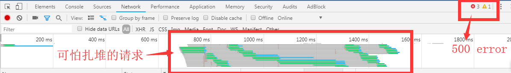
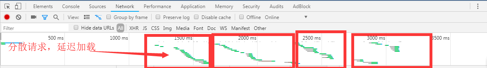

工作上接触了一下图片的处理，图片的格式是文件流, 记录如下。
请求图片的时候，带上{ responseType: 'blob' }, 否则图片显示的可能是乱码。
axios
.post(url, parmas, { responseType: 'blob' })
.then(res => {
return Promise.resolve(res);
})
.catch(e => {
return Promise.reject(e);
});图片返回的是文件流的形式, 控制台中显示的是乱码。
直接显示二进制图片会出错，所以我们要进行处理。
<!-- template中 -->
<img alt="logo" :src="imageUrl" @error="handleLoadError" />/*------ script中------*/
let urlCreator = window.URL || window.webkitURL;
let imageUrl = urlCreator.createObjectURL(res);
this.imageUrl = imageUrl;显示图片中，要对万一图片显示不出来的情况进行处理。使用onerror事件可以对加载图片失败的情况进行处理。
handleLoadError(e) {
const img = e.srcElement;
this.imageUrl = this.errorLoadImg; // 用加载失败的图片替代之
img.onerror = null; // 清除错误:如果错误时加载时显示的图片出错，将会一直循环，所以我们必须清除掉错误，限制运行一次
}<el-upload
action="uploadUrl"
:show-file-list="false"
:accept="'image/*'"
:headers="{token:$cookieStorage.token}"
:on-success="handleSuccess"
:on-error="handleError"
:before-upload="handleBeforeUpload"
:on-progress="handleProgress"
>
<el-button type="primary" size="medium">上传图片</el-button>
</el-upload>
<!--
action: 图片上传的地址
show-file-list: 是否显示文件上传列表
accept: 可接受的上传类型，image/*为图片
headers: 头部信息
on-success: 上传成功事件
on-error: 上传失败事件
before-upload: 上传前处理事件，返回一个值，值为false将阻止上传
on-progress: 上传中事件
-->/*----- 以下为常用处理代码 ------*/
handleSuccess(response, file, fileList) {
this.$success("上传成功");
},
handleError() {
this.$error("上传失败,请重新上传图片!");
},
handleBeforeUpload(file) {
const isImage = file.type.includes("image");
if (!isImage) {
this.$message.error("上传文件类型必须是图片!");
}
const isLt2M = file.size / 1024 / 1024 < 2;
if (!isLt2M) {
this.$message.error("上传图片大小不能超过 2MB!");
}
return isImage && isLt2M;
},
handleProgress(event, file, fileList) {
this.loading = true; // 上传时执行loading事件
}要求：每个 picture area 限制选择一张图片，点击确定后一起提交。
<el-upload
action="myUrl"
:on-change="(file,fileList)=>{handleChange(file,fileList,1)}"
:on-remove="(file,fileList)=>{handleRemove(file,fileList,1)}"
:auto-upload="false"
:file-list="fileList[0]"
ref="file1"
>
<el-button size="small">选择图片</el-button>
</el-upload>
<el-upload
action="myUrl"
:on-change="(file,fileList)=>{handleChange(file,fileList,2)}"
:on-remove="(file,fileList)=>{handleRemove(file,fileList,2)}"
:auto-upload="false"
:file-list="fileList[1]"
ref="file2"
>
<el-button size="small">选择图片</el-button>
</el-upload>
<el-upload
action="myUrl"
:on-change="(file,fileList)=>{handleChange(file,fileList,3)}"
:on-remove="(file,fileList)=>{handleRemove(file,fileList,3)}"
:auto-upload="false"
:file-list="fileList[2]"
ref="file3"
>
<el-button size="small">选择图片</el-button>
</el-upload>
<el-button @click="submitData">确认</el-button>
<!--
action:提交的地址，此处随便写一个，不写会报错
on-change: 图片上传到缓存中将被触发
on-remove: 从缓存中删除文件将被触发
-->data(){
fileList: [0,0,0], //缓存区文件
uploadFile:[[],[],[]] // 上传用文件
},
handleChange(file, fileList, type) {
// 限制单张上传，超过限制即覆盖
if (fileList.length > 1) {
fileList.splice(0, 1);
}
// 校验
const isLt2M = file.size / 1024 / 1024 < 5;
if (!isLt2M) {
this.$message.error("上传图片大小不能超过 5MB!");
this.removeUploadedFile(type); // 不符合要求删除文件
return false;
}
const isImage = file.raw.type.includes("image");
if (!isImage) {
this.$message.error("上传的格式必须是图片!");
this.removeUploadedFile(type);
return false;
}
// 验证通过之后，将缓存区文件存入上传区文件中
this.formData.files[type] = file.raw;
},
// 从缓存区移除文件
removeUploadedFile(type) {
if (type === 0) {
this.$refs.file1.clearFiles();
}
if (type === 1) {
this.$refs.file2.clearFiles();
}
if (type === 2) {
this.$refs.file3.clearFiles();
}
}
// 删除文件
handleRemove(file, fileList, type) {
// 删除文件时要移除缓存区文件和上传区文件
this.fileList[type] = 0;
this.uploadFile[type] = [];
},
// 上传文件
submitData() {
// 校验是否选择文件
let fileNum = this.flatten(this.uploadFile).length;
if (fileNum === 0) {
this.$error("未选择任何文件!");
return false;
}
// 使用formdata格式
let formData = new FormData();
if (this.formData.files[0]) {
formData.append("file1", this.formData.files[0]);
}
if (this.formData.files[1]) {
formData.append("file2", this.formData.files[1]);
}
if (this.formData.files[2]) {
formData.append("file2", this.formData.files[2]);
}
// 请求:在headers上务必加上content-Type,指定表单形式发送
axios
.post("uploadUrl", formData, {headers: { "Content-Type": "multipart/form-data" }})
.then(res => {
this.$success("上传图片成功!");
this.fileList = [0,0,0];
this.uploadFile =[[],[],[]];
})
.catch(e => {
console.log(e);
});
}
// 扁平化数组
flatten(arr) {
let res = [];
for (let i = 0; i < arr.length; i++) {
if (Array.isArray(arr[i])) {
res = res.concat(this.flatten(arr[i]));
} else {
res.push(arr[i]);
}
}
return res;
}vue-lazy-laod和vue-clazy-load同一时间对服务器的请求过多，将会造成浏览器阻塞。
浏览器默认对同一域下的资源，只保持一定的连接数，阻塞过多的连接,以提高访问速度和解决阻塞问题。
对于请求图片来说，有以下解决方法
<img :src="imageUrl" ref="img">// 方式一:延迟加载非可视区域
delayTime() {
let windowHeight = window.innerHeight;
let imgTop = this.$refs.img.getBoundingClientRect().top;
const isDelay = imgTop > windowHeight;
if (isDelay) {
return Math.random() * 2000 + 3000;
} else {
return Math.random() * 2000 + 500;
}
}
// 方法二:按顺序依次延迟加载
delayTime() {
if (this.params.index) {
return Math.random() * 2000 + this.params.index * this.params.type * 500;
} else {
return 0;
}
}
setTimeout(() => {
// 图片请求代码
}, this.delayTime);使用延时加载前的请求

使用延时加载后的请求

[1] XMLHttpRequest Standard.The responseType attribute
[2] XMLHttpRequest.responseType | MDN
[3] 理解DOMString、Document、FormData、Blob、File、ArrayBuffer数据类型 « 张鑫旭-鑫空间-鑫生活
[4] FormData 对象的使用 | MDN
[5] 前端|加载的图片太多或者太大怎么办(上) - u012496505的博客 - CSDN博客
[6] Lazy Loading Images and Video | Web Fundamentals | Google Developers
[7] An Introduction to Progressive Image Rendering
[8] 原生 JS 实现最简单的图片懒加载 - WEB前端 - 伯乐在线
2019/1/14 9:15:33